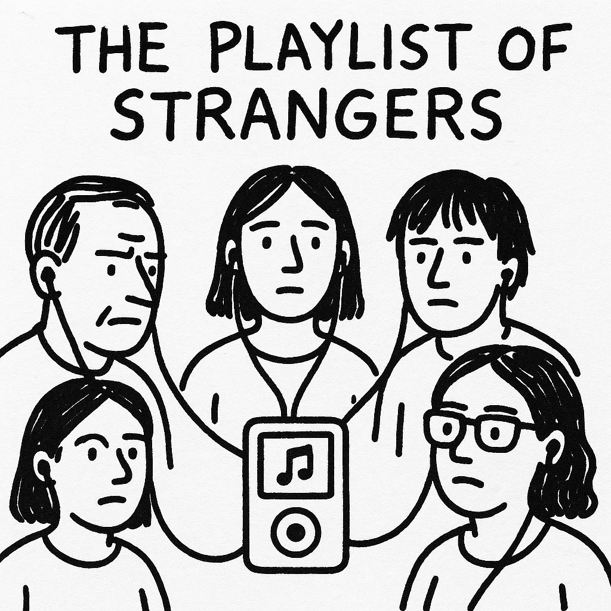

그의 엄지손가락이 화면 위에서 맴돌았다. 이미 이를 닦는 것처럼 일상이 되어버린 똑같은 지루한 트랙들을 선택할 준비가 된 근육 기억이었다. 플레이리스트가 그를 응시했다. 마법을 잃어버릴 때까지 재생했던 노래들의 디지털 영묘 같았다. 각 트랙 제목은 붐비는 지하철 안의 얼굴들처럼 서로 흐릿하게 섞여 있었다.
[His thumb hovered over the screen, muscle memory ready to select the same tired tracks that had become as routine as brushing teeth. The playlist stared back at him, a digital mausoleum of songs he’d played until they’d lost their magic. Each track title blurred into the next, like faces in a crowded subway car.]
“씨발,” 진은 재킷 주머니가 흔들릴 정도로 세게 휴대폰을 주머니에 넣으며 중얼거렸다. 아침 출근길이 빈 캔버스처럼 그의 앞에 펼쳐졌고, 수년 만에 처음으로 그는 오디오라는 지팡이 없이 그것에 맞서야 했다.
[“For fuck’s sake,” Jin muttered, pocketing his phone with enough force to make his jacket pocket swing. The morning commute stretched before him like an empty canvas, and for the first time in years, he’d face it without his audio crutch.]
침묵은 혀로 계속 더듬게 되는 빠진 이처럼 이상하게 느껴졌다. 하지만 그 침묵 속에서, 그는 무언가를 듣기 시작했다 - 대화 조각들, 흥얼거리는 멜로디, 다른 사람들의 헤드폰에서 새어 나오는 깡통 같은 비트들. 그가 지금까지 묻어버렸던 인간 존재의 교향곡이었다.
[The silence felt wrong, like a missing tooth you can’t stop probing with your tongue. But in that silence, he started hearing things - snippets of conversation, hummed melodies, tinny beats leaking from others’ headphones. A symphony of human existence he’d been drowning out.]
“뭘 흥얼거리고 있어요?” 그는 평소 커피를 사는 곳의 바리스타에게 물었다. 평소의 말 없는 거래를 깨뜨리며.
[“What’s that you’re humming?” he asked the barista at his regular coffee spot, breaking their usual wordless transaction.]
그녀는 눈을 깜빡이며 당황했다. “아, 우크라이나 포크 메탈 밴드예요. 전통 악기와 헤비한 기타를 섞어요. 이상하게 들릴 수 있지만, 정말 끝내줘요.”
[She blinked, caught off-guard. “Oh, it’s this Ukrainian folk-metal band. They mix traditional instruments with heavy guitars. Sounds weird, but it slaps.”]
진은 휴대폰에 그 이름을 휘갈겨 적었다. 낯선 글자들이 마치 고대 룬문자처럼 보였다. 그날 저녁, 그는 목구멍에서 나오는 보컬과 기억에 남는 반두라 솔로에 맞춰 고개를 끄덕이고 있는 자신을 발견했다.
[Jin scribbled the name in his phone, the unfamiliar characters looking like ancient runes. That evening, he found himself nodding along to guttural vocals and haunting bandura solos.]
다음 날, 그는 열린 창문을 통해 흘러나오는 클래식 곡에 대해 나이 든 이웃에게 물었다. 그 다음 날에는 그의 칸막이에서 재생되고 있는 재즈 퓨전에 대해 IT 담당자를 붙잡고 물었다. 각각의 추천은 콘서트, 이별, 로드 트립, 첫 키스에 대한 기억들과 같은 이야기와 함께 왔다.
[The next day, he asked his elderly neighbor about the classical piece drifting through her open window. The day after, he cornered the IT guy about the jazz fusion playing in his cubicle. Each recommendation came with a story - memories of concerts, breakups, road trips, first kisses.]
“70년대 인도네시아 사이키델릭 록을 들어봐야 해요,” 치과 의사가 진의 입 안에 손을 깊이 넣은 채 말했다. “녹아내린 무지개 속을 헤엄치는 것 같은 기분이 들게 해요.”
[“You gotta check out this Indonesian psychedelic rock from the ‘70s,” his dentist said, hands deep in Jin’s mouth. “Makes you feel like you’re swimming through melted rainbows.”]
컬렉션은 계속 늘어났다: 몽골 목젖 창법, 브라질 펑크, 노르웨이 블랙 메탈, 서아프리카 하이라이프. 각 장르는 인간 표현의 다양한 맛이었고, 각 노래는 그를 다른 영혼과 연결하는 실이었다.
[The collection grew: Mongolian throat singing, Brazilian funk, Norwegian black metal, West African highlife. Each genre a different flavor of human expression, each song a thread connecting him to another soul.]
그의 새 플레이리스트는 인류의 태피스트리가 되었다 - 지저분하고, 다양하며, 때로는 전환이 거슬리기도 했지만, 이야기들로 가득 차 있었다. 독일 테크노 트랙은 택시 기사가 베를린 나이트클럽을 설명하며 눈을 빛내던 모습을 떠올리게 했다. 블루그래스 곡은 그의 건물 관리인의 켄터키에서의 어린 시절을 떠올리게 했다.
[His new playlist became a tapestry of humanity - messy, eclectic, sometimes jarring in its transitions, but alive with stories. The German techno track reminded him of the taxi driver’s eyes lighting up as he described Berlin nightclubs. The bluegrass tune carried echoes of his building’s superintendent’s childhood in Kentucky.]
음악적 여정을 시작한 지 한 달 후, 진은 노래 제목과 추천으로 가득한 포스트잇에 둘러싸인 채 아파트에 앉아 있었다. 그의 휴대폰에서 알림이 울렸다: “당신의 청취 기록을 바탕으로, 다음에 무엇을 좋아할지 예측할 수 없습니다.”
[One month into his musical odyssey, Jin sat in his apartment, surrounded by sticky notes covered in song titles and recommendations. His phone buzzed with a notification: “Based on your listening history, we can’t predict what you’ll like next.”]
그는 미소를 지으며 특별한 자부심을 느꼈다. 알고리즘이 더 이상 그를 규정할 수 없게 되었다. 그는 디지털 메아리 방에서 벗어나 그 자리에 날것 그대로의 진짜를 찾았다.
[He smiled, feeling a peculiar pride. The algorithm couldn’t pin him down anymore. He’d broken free from his digital echo chamber, finding something raw and real in its place.]
다음 날 아침, 한 젊은 여성이 지하철에서 그의 옆자리에 앉았을 때, 그는 그녀가 보라색 헤드폰을 통해 재생되는 무언가에 맞춰 입을 움직이는 것을 알아챘다. 자신의 플레이리스트에 빠져드는 대신, 그는 그녀의 어깨를 두드렸다.
[The next morning, as a young woman settled into the seat next to him on the subway, he noticed her mouthing words to whatever was playing through her purple headphones. Instead of retreating into his own playlist, he tapped her shoulder.]
“저기요,” 그가 말했다, “뭘 듣고 계세요?”
[“Hey,” he said, “what are you listening to?”]
그녀의 얼굴이 밝아졌고, 또 다른 음악 여정이 시작되었다.
[Her face lit up, and another musical journey began.]
이 이야기는 완벽한 플레이리스트로 끝나는 것이 아니라, 끝없는 발견에 대한 욕구로 끝난다. 진은 가장 좋은 노래가 익숙하게 들리는 노래가 아니라, 더 가까이 다가가게 만들고, 질문을 던지게 하고, 인간 경험이 얼마나 광대하고 다양할 수 있는지 상기시키는 노래라는 것을 배웠다.
[The story ends not with a perfect playlist, but with an endless appetite for discovery. Jin learned that the best songs aren’t the ones that sound familiar, but the ones that make you lean in closer, that make you ask questions, that remind you how vast and varied the human experience can be.]
그의 엄지손가락은 여전히 매일 아침 화면 위에서 맴돌지만, 이제는 습관이 아닌 기대감으로 떨리며, 다른 사람의 세계에서 재생 버튼을 누를 준비가 되어 있다.
[His thumb still hovers over the screen each morning, but now it trembles with anticipation rather than habit, ready to press play on someone else’s world.]